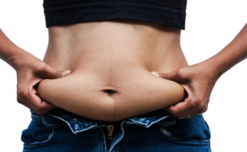

လေ့ကျင့်ခန်း မလုပ်ဘဲ ဗိုက်ချပ်အောင် ဘာလုပ်ကြမလဲ

ခေါင်းစဉ်ဖတ်ရုံနဲ့တင် အားလုံးစိတ်ဝင်စားသွားမယ် ထင်ပါတယ်။ ဟုတ်ကဲ့ ဗိုက်ခေါက်ထူခြင်းက လူတွေ ကို်ယ့ကိုယ်ကို ယုံကြည််ချက်ကျခြင်းရဲ့အကြောင်းအရင်းတစ်ခုလည်း ဖြစ်ပါတယ် ။ အထူးသဖြင့် အမျိုးသမီးတွေမှာပါ။ ဒါ့ကြောင် ကမ္ဘာတစ်ဝှမ်းမှာ အဆီချလေ့ကျင့်ခန်းတွေ ခေတ်စားတယ်ဆိုတာလည်း အများအသိဘဲ ဖြစ်ပါတယ်။ ဒီဆောင်းပါးမှာ ဖော်ပြထားတဲ့ အကြောင်းအရာတွေကတော့ လေ့ကျင့်ခန်းလုပ်တာလောက်တော့ မထိရောက်စေနိုင်ပေမဲ့လည်း သင့် ဗိုက်အဆီကျိဖို့အတွက် အကျိုးရှိစေမှာပါ။
၁။ Probiotic ( ပရိုဘိုင်အိုတစ် ) မှီဝဲပါ
အူလမ်းကြောင်းမှာ ခန္ဓာကိုယ်အတွက် ကောင်းစေတဲ့ ဘက်တီးရီးယားပိုးတွေ ရှိပါတယ်။ ခန္ဓာကိုယ်အတွက်မကောင်းတဲ့ရောဂါပိုးတွေကို တိုက်ဖျက်နိုင်တဲ့ ပိုးကောင်းတွေပါ။ ပရိုဘိုင်အိုတစ်ဆေးတွေက ပိုးကောင်းတွေကို အားဖြည့်ပေးတဲ့အတွက် အစာခြေရလွယ်ကူပြီး သင့်အစာ ခြေလမ်းကြောင်း အဖွဲ့အစည်းတစ်လျှောက် ကျန်းမာနေမှာပါ။ လေအောင့်ခြင်း၊ ရင်ပြည့်ရင်ကယ်ဖြစ်ခြင်းတွေကိုလည်း ကာကွယ်ပေးပါတယ်။
၂။ ဆားလျှော့စားပါ
ဆားဓာတ်က ခန္ဓာကိုယ် အထူးသဖြင့် ဦးနှောက်နဲ့ နှလုံးကျန်းမာရေး အတွက်မရှိမဖြစ်လိုအပ်ပါတယ်။ ဒါပေမဲ့ လိုအပ်တာထက် ပိုစားသုံးရင်တော့ ဆားဓာတ်က ရေတွေကို ဆွဲထားတဲ့အတွက် ရေတွေ များနေပါလိမ့်မယ် ။ ဒါကြောင့် သင်အနေနဲ့ ဗိုက်ချပ်ချင်တယ်ဆိုရင်တော့ ဆားကို လိုအပ်သလောက်ပဲ စားသုံးပြီး ပိုလျှံနေတဲ့ဆားတွေက်ုိ လျှော့စားဖို့ လိုအပ်ပါတယ်။
၃။ ပီကေကို ထွေးထုတ်ပစ်လိုက်ပါ
ပီကေစားတာက အရသာရှိသလို စိတ်အာသာလည်း ပြေပျောက်စေတဲ့အတွက် လူစားများကြပါတယ်။ ဒါပေမဲ့ ပီကေစားတဲ့အတွက် လေထုထဲက လေအနည်းငယ်ကို ပါးစပ်ထဲစုပ်ယူလိုက်သလ်ို ဖြစ်စေပါတယ်။ ဒါကြောင့် ရင်ပြည့်ရင်ကယ်ဖြစ်ခြင်းတွေကို ဖြစ်ပေါ်စေတတ်ပါတယ်။ ဒါ့အပြင် သင့်ရဲ့ အစားအစာစားလိုစိတ်ကို မြှင့်တင်စေတဲ့အတွက် အဆီများတဲ့ ကျန်းမာရေးနဲ့ မညီညွတ်တဲ့ အသင့်စားအစားအစာတွေကို စားမိစေပါတယ်။
၄။ ဘီယာ လျှော့သောက်ပါ
အားလုံးသိတဲ့အတိုင်းပဲ ဘီယာဗိုက်လို့ခေါ်တဲ့ ဗိုက်ရွှဲခြင်းအကြောင်းကို ကြားဖူးကြမှာပါ။ ဘီယာသောက်လို့ အဝလွန်၊ အဆီများစေတတ်သလို အစာအိမ်ထဲမှာ မကောင်းတဲ့ ဘက်တီးရီးယား ပိုးတွေပေါက်ဖွားခြင်းကိုလည်း အားပေးတဲ့အတွက် လျှော့သောက်ဖို့ လိုအပ်သလို ဖြစ်နိုင်သမျှ ဖြတ်ဖို့လည်း ကြိုးစားရပါမယ်။ ဒါမှသာ သင့်ရဲ့ ဗိုက်ခေါက်ချပ်သွားမှာ ဖြစ်ပါတယ်။
၅။ အချိုကဲစာတွေ လျှော့စားပါ
အချိုကဲတဲ့ အစားအစာတွေက အရသာရှိတဲ့အတွက် လူကြိုက်များကြပါတယ်။ ဒီအစားအစာတွေက တကယ်တော့ ကယ်လိုရီများတဲ့အစာတွေပဲ ဖြစ်တဲ့အတွက် ဗိုက်အဆီကိုပဲ ထူစေတာပါ။ ဒါ့အပြင် အချိုများတဲ့အတွက် ဆီးချိုရောဂါကိုလည်း ဖြစ်စေနိုင်ပါတယ်။ အချိုဓာတ်တွေက အူလမ်းကြောင်းက မကောင်းတဲ့ ဘက်တီးရီးယားတွေကို အာဟာရဖြစ်တဲ့အတွက် ရင်ပြည့်ရင်အောင်ခြင်းတွေကိုလည်း ဖြစ်စေနိုင်ပါတယ်။
၆။ အိပ်စက်ချိန် ပုံမှန်ရှိပါစေ
ကျန်းမာရေးအတွက် ကောင်းမွန်တဲ့ အိပ်စက်ခြင်းအကျင့် စောစောအိပ်ပြီး စောစောထခြင်းပါ။ ဒီနည်းဟာ အိပ်ရေးဝသလို ခန္ဓာကိုယ်ရဲ့ ဇီဝနာရီနဲ့လည်း ညီညွတ်ပါတယ်။ အိပ်ရေးပျက်ခြင်း ဒါမှမဟုတ် တစ်ညကို နာရီဝက်ခန့်သာ အိပ်ရတာက သင့်ဗိုက်ခေါက်က အဆီထုအတွက် စိုးရိမ်ဖို့ ကောင်းပါတယ်။
၇။ အသင့်စားအစာနဲ့ အချိုရည်တွေ လျှော့ပါ
ဒီခေတ်မှာ လူစားများတဲ့ အသင့်စားအစာတွေ ( Fast Food ) တွေက အဆီ၊ ဆားဓာတ်၊ ကယ်လိုရီတွေ များပြီး လိုအပ်တဲ့အာဟာရ အနည်းငယ်သာ ပါဝင်တဲ့အတွက် နိုင်ငံတကာမှာပါ အသင့်စားအစာတွေ စားသုံးမှုလျှော့ချနေကြပါတယ်။ ဒါကြောင့် အသင့်စား အစားအစာတွေက်ု ရှောင်ကြဉ်တာက လေ့ကျင့်ခန်းမလုပ်ဘဲ အဆီခေါက်လျှော့ကျရေးကို အထောက်အကူ ပြုစေပါတယ်။
အချိုရည်တွေကလည်း ဒီအတိုင်းပါပဲ။ အထူးသဖြင့် ကိုလာလို သဘာဝအချိုရည်မဟုတ်တဲ့ ရောင်းကုန်ပစ္စည်းဖြစ်တဲ့ အချိုရည်ဘူးတွေက သင့် ဗိုက်ခေါက် အဆီပွားတာကို အားပေးတဲ့အတွက် လျှော့ပြီး သုံးစွဲဖို့ အကြံပေးချင်ပါတယ်။
Source-ဒေါက်တာအောင်ကျော်မြင့်